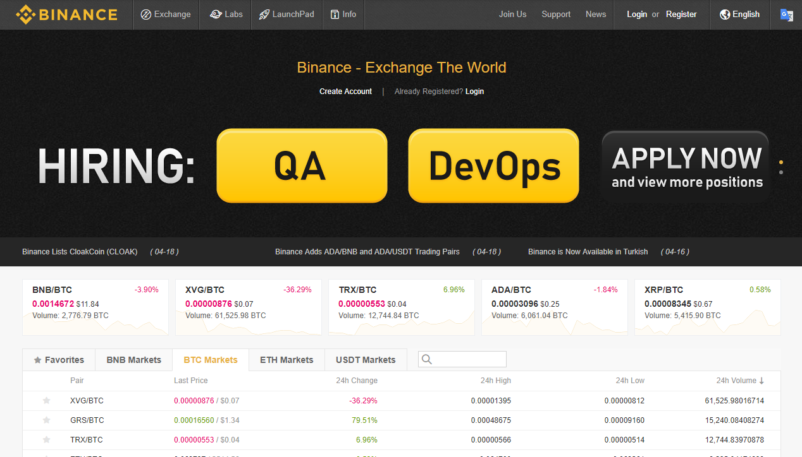

The aim of this Binance review is to determine if it is a cryptocurrency exchange that you should use, or is it something that you should steer clear of. Considering there are different exchanges out there in the market that all offer the same kind of thing, understanding what Binance brings to the table does make a lot of sense. After all, if you are serious about getting involved in cryptocurrency trading in general, then having a good exchange that you can rely on will have a direct impact on your future ability to trade effectively.

The Origins of Binance.
First, let’s check out the origins of the exchange, and what we see is that it was established in Hong Kong in July, 2017 and it was created after a successful ICO that eventually raised $15 million. The company behind it is called Beijie Technology, and its founder is Changpeng Zhao with the company and founder having a stellar reputation within the industry after previously having held a number of high-profile positions.
In other words, the founder has not just come from nowhere to open this exchange as he does have a significant amount of previous experience, which is always going to be important in starting to build trust in the platform and that they do know what they are doing.
The Start of the Exchange.
Even though it is relatively common for a new exchange or cryptocurrency to have some initial success, in the case of Binance there’s no doubt that it has exceeded expectations. Within a short period of time, it was comfortably holding a top ten place in the list of cryptocurrency exchanges with the greatest amount of trade over a 24 hour period, which is in itself a major achievement.
From a confidence perspective, this does show that a number of traders have a significant amount of confidence in the quality of the service on offer from them leading to this real surge in activity on the exchange.
The Positives of the Binance Exchange.
Prior to conducting trades on the exchange, it does make sense to be aware of the positives that come with using Binance. You clearly want to be aware of this so that you know your trades are in safe hands and that you are getting the correct rates since this alone will cut into your profits.
Well, first there are a vast array of cryptocurrencies for you to trade in which always opens up a plethora of possibilities. Within this, you are going to find all of the main altcoins as well as trade pairings, and with them currently having over 100 coins in their listings, then it gives you an idea of the scale of this cryptocurrency exchange.
Furthermore, they have also sought to deal with the issue surrounding fees as they are often regarded as being too high for traders or they fluctuate too much making it harder to complete the trade. Instead, with Binance they have kept it to a straightforward 0.1%, and there are also opportunities to have that reduced further which is cool in its own right.
You will end up having to pay withdrawal fees, but that is completely normal even though they do charge less than a number of other companies. It always depends on the cryptocurrency that you are withdrawing, so keep that in mind.
Another area where Binance is not exactly lacking is in customer support. The only problem is that you might wait some time to get a reply simply because of the sheer volume of traffic and trading that they handle on a daily basis, so once again that is not something that is unusual. There is a QR code and a WeChat option that may work for you, but that is not guaranteed and some of the answers that you get will be automated.
However, at least there are several ways to get in touch with them, and as long as you have some patience then it should work out quite well.

Finally, they have a clean interface for you to work from which is always a good thing as it allows you to keep track of the various rates so you don’t miss out on a good deal.
Potential Issues with Binance?
To be fair, Binance is not 100% perfect as there are some areas where they could be performing slightly better. The customer service could be improved, and this is especially true for the WeChat option, as it simply does not work right and if they are going to offer it, then this should not be the case.
Aside from that, there is nothing really to worry about with Binance as they do at least cover the various bases, and do a thorough job in doing so, which is not too bad when you consider the other cryptocurrency exchanges that are out there that have had various allegations levelled at them over time.
Is it a Scam?
We also need to address a rather important point as there have been some claims that this exchange is a scam. This is all linked to the way in which some individuals have difficulty in withdrawing funds from time to time but this is due to a temperamental 2FA/SMS confirmation rather than anything else. From that perspective, this is not a scam in any way as it is a technical issue instead of them simply wanting to take your money.
Overall Conclusion About Binance.
To conclude, Binance is actually one of the best cryptocurrency exchanges that are out there simply because of the low fees mixed in with the multitude of cryptocurrencies that are on offer. This provides you more than enough scope for trading as well as making it easier to increase the level of trading that is possible via this exchange.
This is something that operates as smoothly as possible considering what it deals with and creating your account on their platform takes minutes to do. Aside from the SMS issue, depositing and withdrawing funds is also not going to be a problem, and it is not just us saying that as there are countless other reviews and comments on message boards that back up our view that Binance is something that is effective and can be trusted.